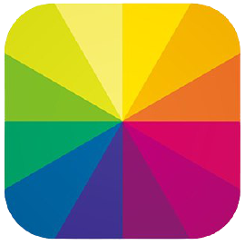

Chat GPT Fejlesztve az OpenAI által Szinte mindenre fel leht használni, a kép generálástól a programozásig bármire Nézd meg  Fotor Fejlesztve a Chengdu Hengtu Technology Co., Ltd által AI képgenerálás Nézd meg Deep AI Fejlesztve Deep AI Inc által Videó generálás, de minden mást is tud Nézd meg Chat GPT Fejlesztve az OpenAI által Szinte mindenre fel leht használni, a kép generálástól a programozásig bármire Nézd meg Fotor Fejlesztve a Chengdu Hengtu Technology Co., Ltd által AI képgenerálás Nézd meg Deep AI Fejlesztve Deep AI Inc által Videó generálás, de minden mást is tud Nézd meg Chat GPT Fejlesztve az OpenAI által Szinte mindenre fel leht használni, a kép generálástól a programozásig bármire Nézd meg Fotor Fejlesztve a Chengdu Hengtu Technology Co., Ltd által AI képgenerálás Nézd meg Deep AI Fejlesztve Deep AI Inc által Videó generálás, de minden mást is tud Nézd meg